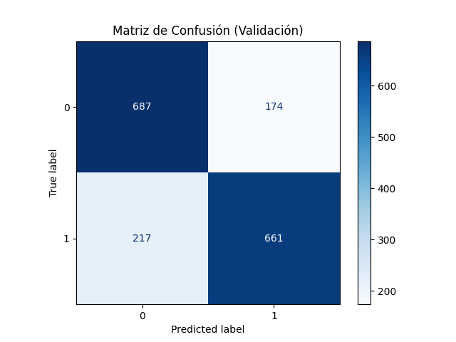
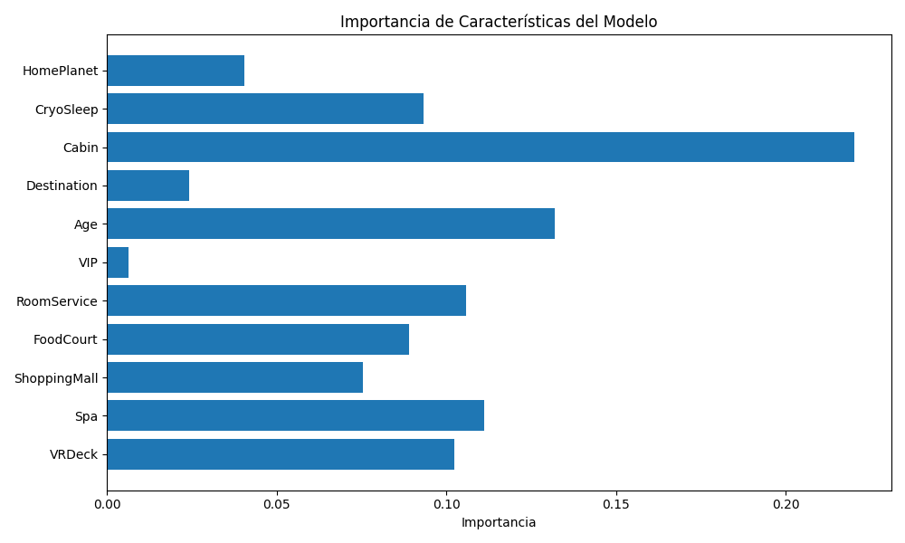
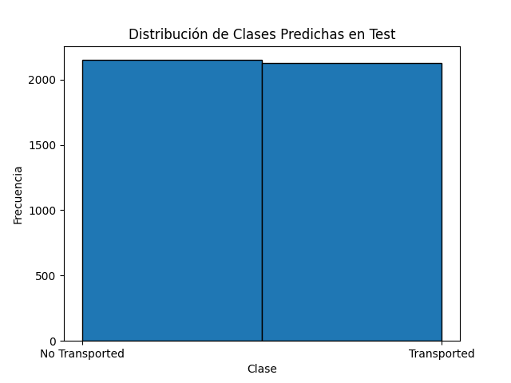

Modelo de Clasificación Random Forest con visualización de resultados
En esta tarea se implementó un modelo de clasificación tipo Random Forest con el objetivo de predecir la variable Transported en un conjunto de datos simulados. El modelo fue entrenado con datos preprocesados y evaluado mediante validación cruzada y gráficas interpretativas.
Matriz de Confusión:
Importancia de Características:
Distribución de Clases Predichas:
 Descargar archivo de predicciones (submission.csv)El modelo Random Forest presentó una precisión aproximada del 77% en el conjunto de validación. La matriz de confusión permite observar la calidad de la clasificación binaria, mientras que la gráfica de importancia de características resalta aquellas variables más influyentes en la predicción.
Se concluye que el modelo tiene un buen desempeño y podría mejorarse con técnicas de ajuste de hiperparámetros, validación cruzada más exhaustiva y exploración de datos faltantes.
import pandas as pd
import numpy as np
import matplotlib.pyplot as plt
from sklearn.model_selection import train_test_split
from sklearn.ensemble import RandomForestClassifier
from sklearn.preprocessing import LabelEncoder
from sklearn.metrics import accuracy_score, confusion_matrix, ConfusionMatrixDisplay
# CARGA DE DATOS
train = pd.read_csv("train.csv")
test = pd.read_csv("test.csv")
# CODIFICACIÓN CATEGÓRICA
cat_cols = ['HomePlanet', 'CryoSleep', 'Cabin', 'Destination', 'VIP']
encoder = LabelEncoder()
for col in cat_cols:
train[col] = encoder.fit_transform(train[col].astype(str))
test[col] = test[col].apply(lambda x: x if x in encoder.classes_ else encoder.classes_[0])
test[col] = encoder.transform(test[col].astype(str))
# ENTRENAMIENTO
X = train.drop(['Transported', 'PassengerId', 'Name'], axis=1)
y = train['Transported'].astype(int)
X_train, X_val, y_train, y_val = train_test_split(X, y, test_size=0.2, random_state=42)
model = RandomForestClassifier(random_state=42)
model.fit(X_train, y_train)
# EVALUACIÓN Y GRÁFICAS
y_pred = model.predict(X_val)
accuracy = accuracy_score(y_val, y_pred)
print(f"Precisión: {accuracy:.4f}")
# MATRIZ DE CONFUSIÓN
disp = ConfusionMatrixDisplay(confusion_matrix=confusion_matrix(y_val, y_pred), display_labels=model.classes_)
disp.plot(cmap='Blues')
plt.savefig("matriz_confusion.png")
plt.close()
# IMPORTANCIA DE CARACTERÍSTICAS
importances = model.feature_importances_
features = X.columns
plt.figure(figsize=(10, 6))
plt.barh(features, importances)
plt.tight_layout()
plt.savefig("importancia_caracteristicas.png")
plt.close()
# DISTRIBUCIÓN DE PREDICCIONES
X_test = test.drop(['PassengerId', 'Name'], axis=1)
predictions = model.predict(X_test)
plt.figure()
plt.hist(predictions, bins=2, edgecolor='black')
plt.xticks([0, 1], ['No Transported', 'Transported'])
plt.savefig("distribucion_predicciones.png")
plt.close()
# ARCHIVO DE SUBMISIÓN
submission = pd.DataFrame({
'PassengerId': test['PassengerId'],
'Transported': predictions
})
submission.to_csv('submission.csv', index=False)